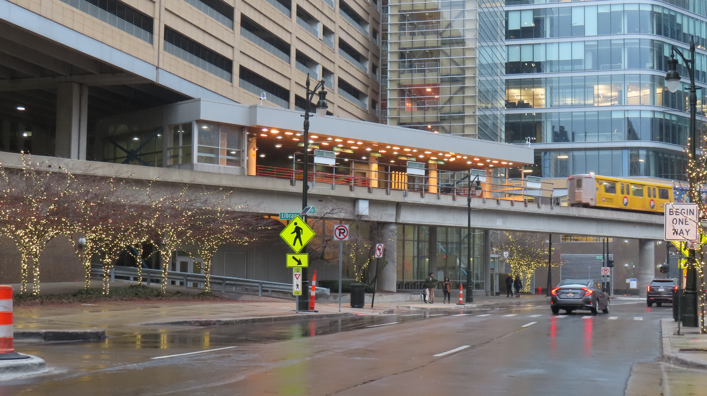
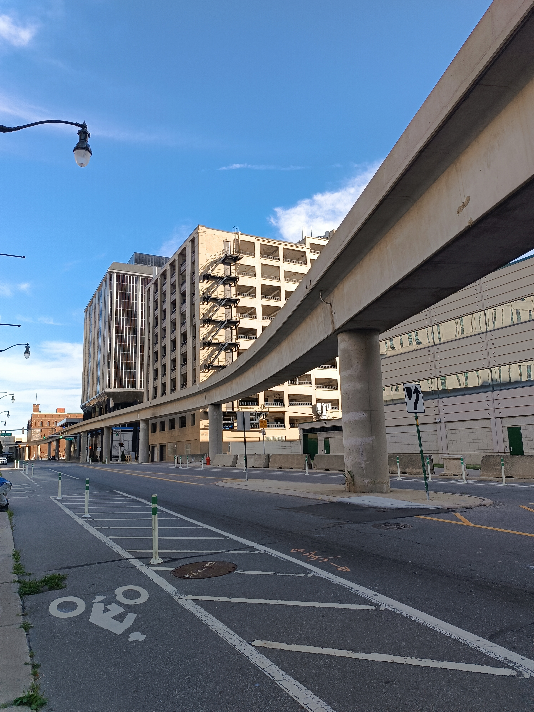

Live Transit Detroit · Installment 04 · October 2026
The People Mover Is Under Construction
Published October 9, 2026 · By Justin Spencer Smith
The Live Transit map rendered the Detroit People Mover as a 40-meter-wide concrete deck with a solid skirt wall hanging below it — a ground-level corridor drawn through downtown. The real system is none of those things. In the Detroit Transportation Corporation's own words, from its December 2025 system plan: "The DPM is an elevated rail system serving 13 stations in Downtown Detroit. As an automated people mover (APM), the system's driverless two-car trains rely on an automated train control system to complete its 2.9-mile one-way loop." The render was lying about the infrastructure. This build corrects it, and the layer now ships off by default — which is also the honest state of the real system, documented below.

What shipped
| Change | What it does |
|---|---|
| Off by default | The loop no longer renders on load. The filter panel's People Mover toggle enables it. Rationale: the layer is static geometry with no live feed, and the real system has spent much of the last two years closed. |
| 14 m single-track guideway | Deck narrowed from 40 m to 14 m — a single automated guideway, not a bus corridor. Narrow enough that street-level stops, buses, and buildings stay visible beneath it. |
| Skirt removed | The continuous dark wall below the deck is gone. It was the element obscuring ground objects; open air now sits under the elevated line, as it does in reality. |
| Pillars at stations only | Support columns render exclusively at station locations — the known points. No invented infill between them. |
| Station tap priority | People Mover station taps are now evaluated before the DDOT stop fallbacks. Downtown DDOT stops were stealing taps aimed at the elevated pins, which read as "stations not selectable." |

Verification
Served bytes confirmed: the page references JS stamp v20261009-0910, the served JS contains the narrowed guideway and the off-by-default flag, and the station-picking order change is present in the click handler. Syntax-checked before push; no remaining references to the old 40 m deck width.
The real system's published downtime
The render change is downstream of a physical fact: the People Mover has been under construction, repeatedly, in public view. DTC's study puts the scale in context: "In both fiscal year (FY) 2024 and 2025, over one million riders used the system to get to their destinations or to explore Downtown Detroit."
- September 3 – November 22, 2024: an 11-week closure for track replacement — 7,000 feet of rail across nine curves, the worst wear at the Renaissance Center and Greektown curves. Only the third rail replacement in the system's 37-year history (prior: 2008, 2016). Cost near $5 million, funded by state and federal grants; the new rail is expected to last 15–30 years. Source: WDIV; DTC's own project page records it as the "Track Improvement Project and closure from September 3—November 22, 2024."
- March 13 – May 6, 2026: a seven-week closure after high winds drove sheet metal into the guideway, tearing track cable and damaging switch mechanisms. The system reopened May 6 after 16 days of test runs. DTC CEO and General Manager Melia Howard: "Rider safety is always at the heart of what we do, and it is our responsibility as a public transit provider." Source: Detroit Free Press.
The proposed expansion
The Detroit Transportation Corporation released its People Mover system plan and downtown mobility study in August 2026 (an $800,000 MDOT grant, roughly eighteen months of work). The study's baseline framing: "Completing a full circuit takes about 15 minutes. The DPM currently runs in a counterclockwise loop but can be operated in either direction." It names three candidate corridors: west to Corktown and Michigan Central, north past the stadiums into Eastern Market, and along the west riverfront to Ralph C. Wilson Jr. Centennial Park. None has funding or a schedule; MDOT is funding the alternatives analysis that would select a route, stations, vehicle type, and payment mechanism. An earlier proposal — doubling the route up Woodward to New Center at $150–200 million — was superseded by the QLine streetcar, which opened in 2017. Separately, DTC plans to replace the 12 original 1986 Mark I cars with 12 refurbished cars of the same model from Toronto's decommissioned Scarborough RT. Sources: DTC system plan (Dec 2025); rawdetroit.org; Wikipedia.
What this means for the map
The People Mover layer is now drawn the way the system exists: elevated, narrow, automated, one direction — and switched off until the viewer asks for it. If the expansion corridors advance past study into funded construction, the layer will grow with them. Until then, the map declines to present a static loop as a live one.
Simulation: real-time information, including construction
The layer system that made this rework possible is also the platform's simulation surface. Because the People Mover is static geometry with no live feed, it is the cleanest demonstration of the principle: service states — closures, detours, construction zones, the 2024 track replacement, the 2026 wind-damage shutdown — can be modeled as layer states against the same geometry, with the same provenance labeling the map already carries. The trip planner's scheduled-vs-typical modes are the first consumer of that idea. The next step is construction-aware routing: when a guideway closes for eleven weeks, the map should show the closure, not just the absence.
Sources
- Detroit Transportation Corporation: "Detroit People Mover — System Plan and Downtown Mobility Study, Existing Conditions Assessment" (final, Dec 2025; PDF author: DTC) — system characterization, ridership, loop operation quotes
- DTC: 2024 Track Improvement Project page — "Track Improvement Project and closure from September 3—November 22, 2024" — thepeoplemover.com
- WDIV: "People Mover closed for track replacement project in Downtown Detroit" (Sept 3, 2024) — gmg-wdiv-prod.cdn.arcpublishing.com
- Detroit Free Press: "Detroit People Mover reopens seven weeks after wind damage" (May 6, 2026; quotes DTC CEO Melia Howard) — freep.com
- rawdetroit.org: "People Mover Expansion: Final Plan Maps Routes to Corktown, Eastern Market and the Riverfront" (Oct 2026) — rawdetroit.org
- Wikipedia: "Detroit People Mover" (expansion proposals; rolling stock) — en.wikipedia.org